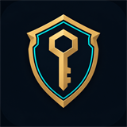

Agrega tu primera cuenta iniciando sesión en el cliente, o importa la lista que tenías en un txt.
Inicia sesión una vez en el Riot Client y Smurf Vault guarda la cuenta sola. Después entras con un clic en Jugar, sin escribir la contraseña.
Una cuenta por línea: usuario:contraseña. También sirve ;, tab, / o un espacio.
usuario:contraseña
;
/
Para consultar todas tus cuentas a la vez, Smurf Vault usa la API oficial de Riot, que pide una API key gratuita.
Acepta la partida por ti cuando sale en el cliente de LoL. Sigue funcionando con la bóveda bloqueada, mientras Smurf Vault esté abierto.
Con espera alcanzas a rechazar la partida tú si no quieres jugarla. Solo hace lo mismo que apretar "Aceptar".
Tus amigos te ven desconectado en el LoL aunque tengas el cliente abierto. Se mantiene al cambiar de cuenta, mientras Smurf Vault esté abierto. Al apagarlo vuelves a quedar en línea.
Para cambiarla necesitas la actual. La nueva tampoco se puede recuperar: si la olvidas, pierdes la bóveda.
Cambia los colores a tu gusto: se ven al tiro y se guardan en este PC.
Se usa para "Actualizar rangos". Queda guardada cifrada dentro de tu bóveda.